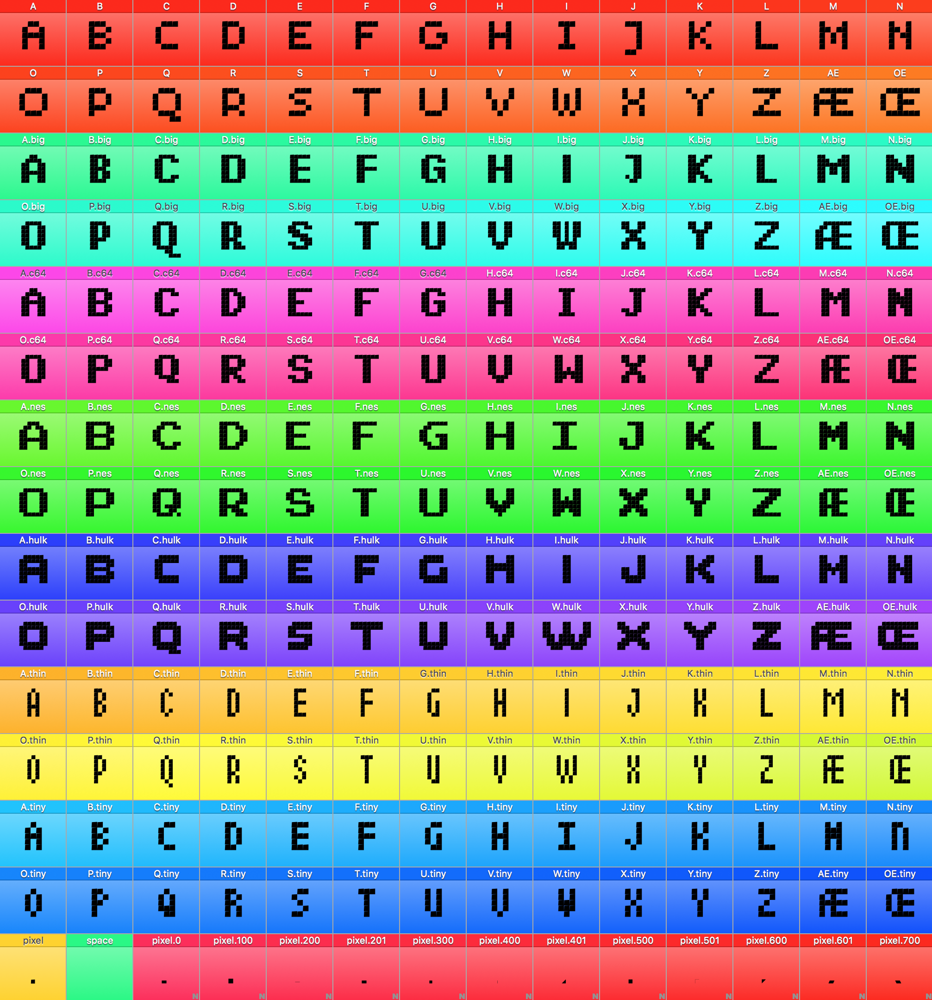

This Piksels project is an idea for a variable system for pixels fonts.
All the pixel in the glyphs are components. And all the pixel-shapes are present as seperate glyphs.
A scripts builds the designspace according to the various pixel-shapes present and some parameters [ proportion, slant, rotation ], and all the needed sources are generated. Then the variable font can be generated.
In this example I have 7 alphabets, these are accessible via FeatureVariations.
DUCK HUNT
The working file is a single UFO. Here are all the character sets, the pixels, and a temporary pixel for sketching. In the features, the lookups for FeatureSubstitution are declared and the rvrn feature is initiated. After the font is generated, a custom made GSUB table is merged into the font to make the FeatureSubsitions work.

I made a tutorial how to make your own variable pixel font.
I povide a script that makes the designspace document and an example ufo. I like to use fontmake so that is in this workflow too. You can find all these resource on my GitHub account: https://github.com/hallotype/Piksels.
If you have any questions, please contact me by mail, twitter, ...